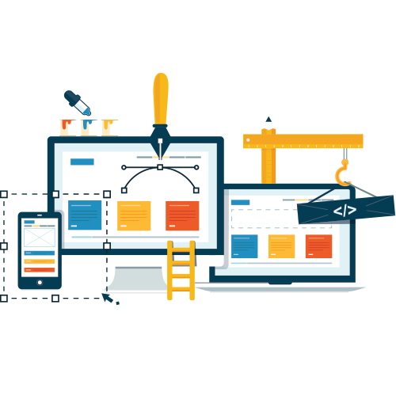

Front-end developers and designers spend their time making things look and work well, obsessing over layouts, navigation, colors, and design.
PHP is most used in content-heavy websites with relatively little user interaction. The most popular content management systems - Wordpress, Drupal, and Joomla - are all written in PHP, and everything from local restaurants' websites up through large complex government deployments are built with these tools. If you're keen to work for an agency that builds websites for clients, or if you like the idea of building out sites for brands, businesses, and organizations, PHP is a great direction to go.

C# is most popular among bigger established businesses, often for building internal software. Because it's been around for a long time and has the backing of Microsoft, it is one of the most in-demand languages in the job market. C# has also been going through a bit of a rebirth lately, with Microsoft open sourcing the language and surrounding platform, porting it to run on Mac and Linux, and incorporating many of the best features of other languages. If you like the idea of working for a larger company on business software, C# is a great choice.

Ruby is a favorite language of developers building interactive web applications. If an app involves users creating accounts, entering information, and interacting with dynamic content, there's a good chance it is built with Ruby. Ruby became popular because the Rails framework, which is written with Ruby, simplified many of the common tasks associated with building web applications. It's most popular with startups and smaller companies who are looking to build their product quickly.

Java is also a favorite of enterprise companies, but its appeal is broader as well: it's one of the most popular of all programming languages, and it's used in everything from for high-performance processing to building Android user interfaces. Because Java has been very popular for a very long time and is used in so many applications, it is also a very high-demand language. If you're interested in working for an enterprise-level company, as an Android developer, or in high-performance applications, Java could be a good language to learn.
If you're not sure of where you want to go in the web development field, front-end developing could be the right fit for you. From there you could, and likely would, have frequent interaction with back-end developers, and might find frequent opportunity to dip your feet into and learn the back end for an eventual transition. Front-end developers and designers spend their time making things look and work well, obsessing over layouts, navigation, colors, and design.